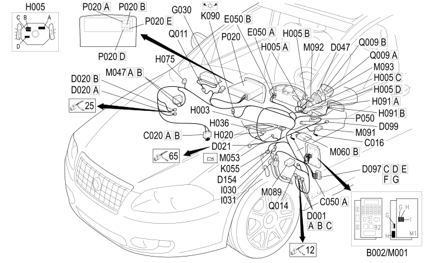

20 DASHBOARD
- Path
- Electrical equipment > 2 WIRING > 20 DASHBOARD
- Kind
- wiring harness
- Applies to
- engines: 2.2, 1.9 JTD 16v, 2.4 JTD 20v; all production periods
- Interactive page
- https://sloeber94.github.io/elrnDB-fCrm/en/#/194001795
Applies to: engines: 2.2, 1.9 JTD 16v, 2.4 JTD 20v; all production periods

Topics that link to this page (85)
- B002G JUNCTION UNIT UNDER DASHBOARD (DASHBOARD)
- B002H JUNCTION UNIT UNDER DASHBOARD (DASHBOARD)
- C016 AIR CONDITIONING UNIT EARTH (DASHBOARD)
- C020A PASSENGER SIDE DASHBOARD EARTH (DASHBOARD)
- C020B PASSENGER SIDE DASHBOARD EARTH (DASHBOARD)
- C050A AIR BAG SYSTEM EARTH (DASHBOARD)
- D001A FRONT/DASHBOARD COUPLING (DASHBOARD)
- D001A FRONT/DASHBOARD COUPLING (DASHBOARD)
- D001A FRONT/DASHBOARD COUPLING (DASHBOARD)
- D001A FRONT/DASHBOARD COUPLING (DASHBOARD)
- D001A FRONT/DASHBOARD COUPLING (DASHBOARD)
- D001A FRONT/DASHBOARD COUPLING (DASHBOARD)
- D001A FRONT/DASHBOARD COUPLING (DASHBOARD)
- D001A FRONT/DASHBOARD COUPLING (DASHBOARD)
- D001A FRONT/DASHBOARD COUPLING (DASHBOARD)
- D001A FRONT/DASHBOARD COUPLING (DASHBOARD)
- D001B FRONT/DASHBOARD COUPLING (DASHBOARD)
- D001C FRONT/DASHBOARD COUPLING (DASHBOARD)
- D020A DASHBOARD/REAR COUPLING (DASHBOARD)
- D020B DASHBOARD/REAR COUPLING (DASHBOARD)
- D020B DASHBOARD/REAR COUPLING (DASHBOARD)
- D021 DASHBOARD/AIR CONDITIONING-HEATER COUPLING (DASHBOARD)
- D021 DASHBOARD/AIR CONDITIONING-HEATER COUPLING (DASHBOARD)
- D047 CLOCK SPRING COUPLING (DASHBOARD)
- D068A HI-FI SYSTEM COUPLING (DASHBOARD)
- D068A HI-FI SYSTEM COUPLING (DASHBOARD)
- D097C SHORT CIRCUIT COUPLING (DASHBOARD)
- D097D SHORT CIRCUIT COUPLING (DASHBOARD)
- D097E SHORT CIRCUIT COUPLING (DASHBOARD)
- D097F SHORT CIRCUIT COUPLING (DASHBOARD)
- D097G SHORT CIRCUIT COUPLING (DASHBOARD)
- D097G SHORT CIRCUIT COUPLING (DASHBOARD)
- D097G SHORT CIRCUIT COUPLING (DASHBOARD)
- D099 RADIO PHONE PREPARATION COUPLING (DASHBOARD)
- D154 DASHBOARD/BRAKE PEDAL SWITCH BRAID COUPLING (DASHBOARD)
- E050A INSTRUMENT PANEL (DASHBOARD)
- E050B INSTRUMENT PANEL (DASHBOARD)
- G030 GLOVE COMPARTMENT LIGHT (DASHBOARD)
- H003 IGNITION DEVICE (DASHBOARD)
- H005A STEERING COLUMN SWITCH UNIT (DASHBOARD)
- H005B STEERING COLUMN SWITCH UNIT (DASHBOARD)
- H005C STEERING COLUMN SWITCH UNIT (DASHBOARD)
- H005D STEERING COLUMN SWITCH UNIT (DASHBOARD)
- H020 HAZARD WARNING LIGHTS SWITCH (DASHBOARD)
- H036 CONTROLS ON TUNNEL (DASHBOARD)
- H075 PASSENGER AIR BAG DISABLING SWITCH (DASHBOARD)
- H091A LEFT CONTROL UNIT (PCS, LEFT CONTROL PANEL) (DASHBOARD)
- H091B LEFT CONTROL UNIT (PCS, LEFT CONTROL PANEL) (DASHBOARD)
- I030 BRAKE PEDAL SWITCH (DASHBOARD)
- I031 CLUTCH PEDAL SWITCH (DASHBOARD)
- I031 CLUTCH PEDAL SWITCH (DASHBOARD)
- K055 ACCELERATOR PEDAL POTENTIOMETER (DASHBOARD)
- K090 SOLAR SENSOR (DASHBOARD)
- M001G BODY COMPUTER (DASHBOARD)
- M001H BODY COMPUTER (DASHBOARD)
- M001I BODY COMPUTER (DASHBOARD)
- M047A TYRE INFLATION PRESSURE CONTROL UNIT (DASHBOARD)
- M047B TYRE INFLATION PRESSURE CONTROL UNIT (DASHBOARD)
- M053 AUTOMATIC TRANSMISSION GEAR SELECTOR CONTROL UNIT (DASHBOARD)
- M060B AIR BAG CONTROL UNIT (DASHBOARD)
- M089 STEERING LOCK CONTROL UNIT (NBS) (DASHBOARD)
- M091 SLEWING CONTROL UNIT (DASHBOARD)
- M091 SLEWING CONTROL UNIT (DASHBOARD)
- M091 SLEWING CONTROL UNIT (DASHBOARD)
- M091 SLEWING CONTROL UNIT (DASHBOARD)
- M092 STEERING ANGLE CONTROL UNIT (NAS) (DASHBOARD)
- M093 STEERING WHEEL NODE CONTROL UNIT (NVO) (DASHBOARD)
- P020A RADIO (DASHBOARD)
- P020A RADIO (DASHBOARD)
- P020A RADIO (DASHBOARD)
- P020A RADIO (DASHBOARD)
- P020B RADIO (DASHBOARD)
- P020B RADIO (DASHBOARD)
- P020B RADIO (DASHBOARD)
- P020B RADIO (DASHBOARD)
- P020C RADIO (DASHBOARD)
- P020C RADIO (DASHBOARD)
- P020D RADIO (DASHBOARD)
- P020D RADIO (DASHBOARD)
- P020F RADIO (DASHBOARD)
- P050 CIGAR LIGHTER / CURRENT SOCKET (DASHBOARD)
- Q009A DRIVER'S AIR BAG (DASHBOARD)
- Q009B DRIVER'S AIR BAG (DASHBOARD)
- Q011 AIR BAG IN DASHBOARD (PASSENGER SIDE) (DASHBOARD)
- Q014 DRIVER'S SIDE KNEE BAG (DASHBOARD)